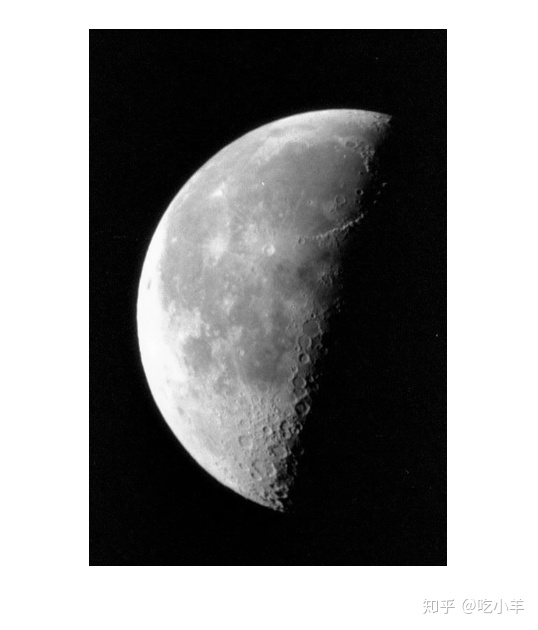
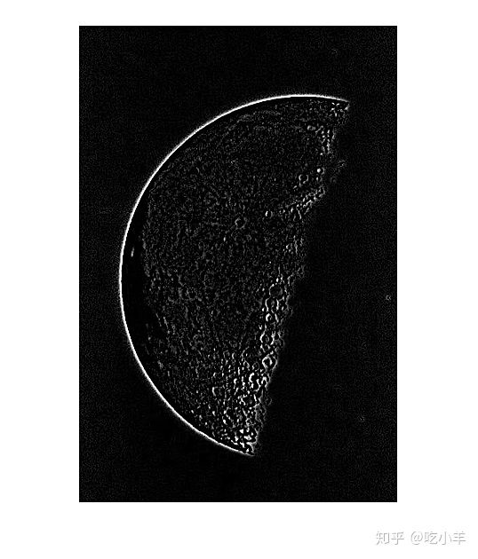

Home
本示例说明如何使用fspecial函数创建预定义的高斯拉普拉斯（LoG）滤波器，以及如何使用函数imfilter将滤波器应用于图像。LoG滤波器突出显示强度快速变化的区域，并减少了由噪声引起的变化的影响。fspecial函数以相关内核的形式生成几种其他类型的预定义过滤器。
读取并显示图像。
I = imread('moon.tif');
imshow(I)

使用fspecial，创建的一个标准差是0.4的7×7 LoG滤波器。
h = fspecial('log',7,0.4)
h = 7×7
0.1263 0.1263 0.1263 0.1263 0.1263 0.1263 0.1263
0.1263 0.1263 0.1263 0.1267 0.1263 0.1263 0.1263
0.1263 0.1263 0.2333 1.1124 0.2333 0.1263 0.1263
0.1263 0.1267 1.1124 -10.4357 1.1124 0.1267 0.1263
0.1263 0.1263 0.2333 1.1124 0.2333 0.1263 0.1263
0.1263 0.1263 0.1263 0.1267 0.1263 0.1263 0.1263
0.1263 0.1263 0.1263 0.1263 0.1263 0.1263 0.1263
使用imfilter，将滤波器应用于图像。
I2 = imfilter(I,h);
显示滤波后的图像。
imshow(I2)

======================================================================
我的测试结果及程序
下面是我测试的代码：

注：本文根据MATLAB官网内容修改而成。